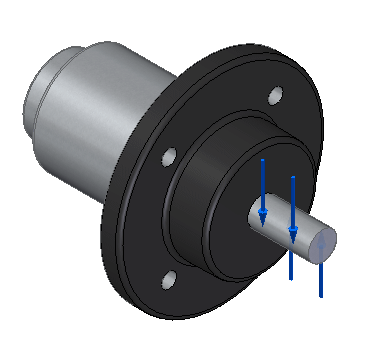

Activity: Apply a torque load
-
Open the existing file named FE_mower_hub.par.
Simulation models are delivered in the \Program Files\Siemens\Solid Edge 2023\Training\Simulation folder.

-
Create the study.
Note:The material is already defined: Stainless steel.
-
Select Simulation tab→Study group→New Study.

-
In the Create Study dialog box, choose the Linear Static study type and Tetrahedral mesh type, and then click OK.

The study is created and is active, as indicated on the ribbon in the Study group on the Simulation tab.

-
-
Define the torque load.
-
Select Simulation tab→Structural Loads group→Torque
 .
. -
Select the hub shaft.

-
Type 100 N-m for the torque value. Press Enter.


-
Left-click in space to finish.

-
-
Close this file.
How do I
Define a loadActivity: Apply a bearing load
Activity: Apply a centrifugal load
Activity: Apply a body temperature load
Learn more
Creating and using loadsLoad labels and symbols
Structural and body loads
Thermal loads
External loads (imported loads)
Loads directional steering wheel
Look up more details
Loads command barThermal Load Options dialog box
Radiation Load Options dialog box
Color dialog box
Graphic Symbol Size dialog box